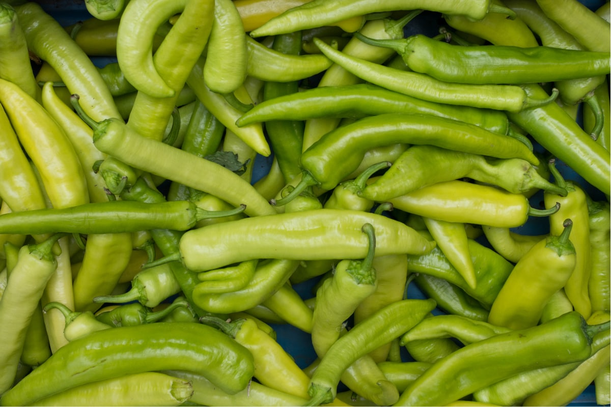

<section class="section-similar-articles">
	<div class="section-similar-articles__container _container">
		<div class="similar-articles-block">
			<div class="similar-articles-block__item-article">
				<div class="item-article item-article_big">
					<article class="article-card article-card_big">
						<div class="article-card-inner ar-card-big">
							<div class="img-box">
							  
							  <div class="badg__active badg__active_useful">
								 Корисності
							  </div>
							</div>
							<div class="article-content ar-content-big">
							  <h3 class="ar-content-big-content__title"><a href="#" class="article-content__link">Чим корисний зелений перець.</a> Пояснює дієтолог 
								з визнанням</h3>
							  <a href="#" class="ar-content-big__author">Костянтин Кухаренко</a>
							</div>
						 </div>
					</article>
				</div>
			</div>
			<div class="similar-articles-block__news-item">
				<h3 class="title news-title">Схожі статті</h3>
				<div class="item-news">
					<a href="#" class="item-news__author">Ольга Цибульська</a>
					<h3 class="item-news__title"><a href="#" class="item-news__link">Корисні властивості чорниці та лохини. Інформація від експерта</a></h3>
				</div>
				<div class="item-news">
					<a href="#" class="item-news__author">Андрій Семенюк</a>
					<h3 class="item-news__title"><a href="#" class="item-news__link">Найкорисніші овочі:</a>помідори, капуста, морква. Як готувати їх без втрати вітамінів</h3>
				</div>
				<div class="item-news">
					<a href="#" class="item-news__author">Оксана Кухарчук</a>
					<h3 class="item-news__title"><a href="#" class="item-news__link">Все про квашені помідори: </a>користь і шкода, рецепти</h3>
				</div>	
				<a href="#" class="s-btn"> Всі статті</a>
		</div>
	</div>
</section>